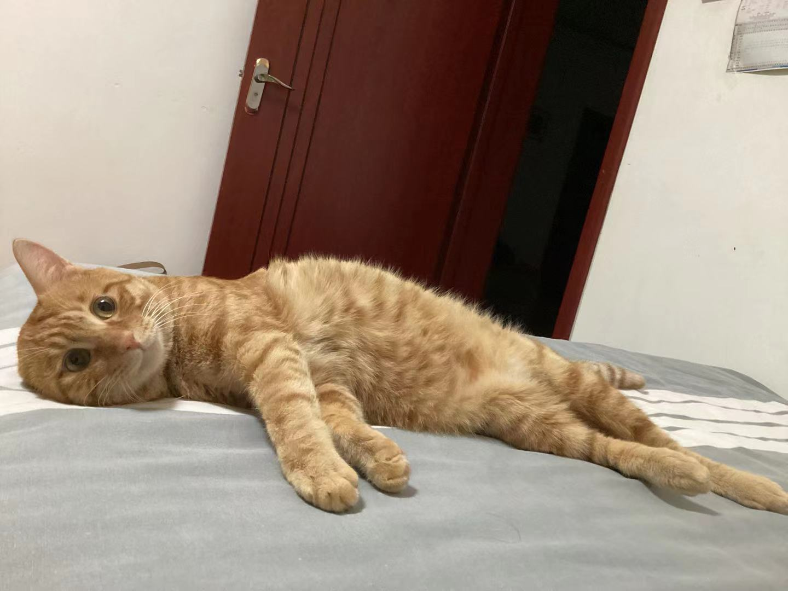
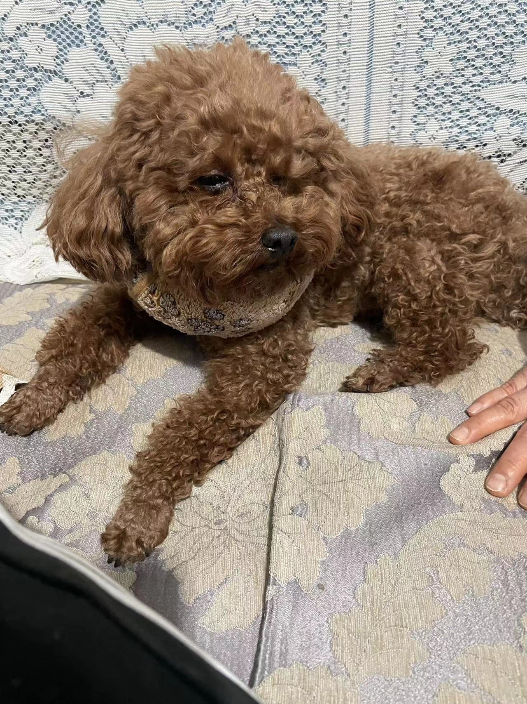
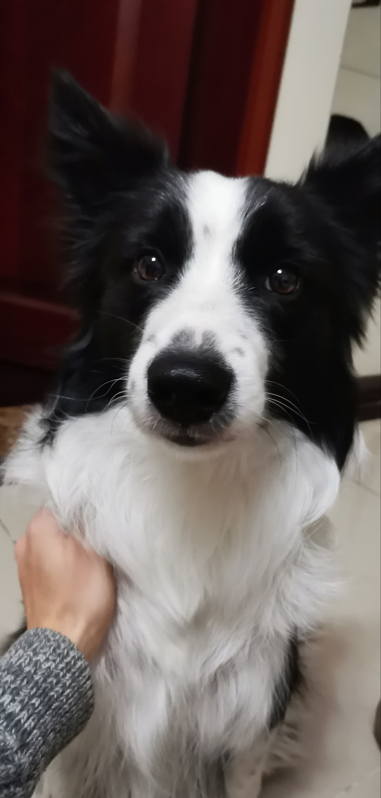
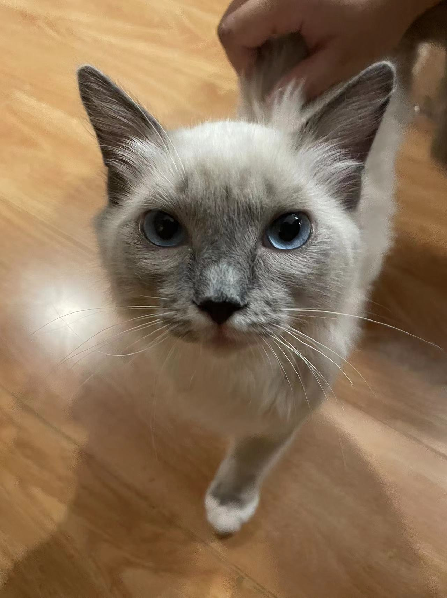
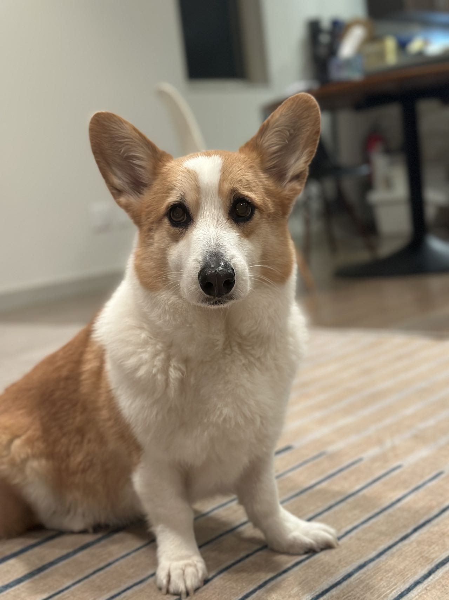

Little Tangerine the Cat
Little tangerine the cat is a 1 year cat. He was initially a stray cat before adoption. He is super lazy and lies down all the time. Sitting up to him is already cardio. He also enjoys sitting besides the sill and look at the environment outside of the window.
Photo Gallery
Likes
- Eating
- Lying on sofa
- Looking out side of the window
Rice Cake the Dog
Rice cake is a small Teddy bear dog, doesn't have much interest in anything other than eating meat and going for walks. Whenever it's mealtime, he's always the first one waiting in the dining room. Besides that, he's a bit of a wild child when alone, but when you give him snacks, he quickly calms down and brings us a lot of joy.
Photo Gallery
Likes
- Eating meat
- Getting belly rubs
- Going out to play.
Lucky the Dog
Lucky, a two-and-a-half-year-old Border Collie, prefers playing with people rather than other dogs. His favorite activity is having his parents hold a laser pointer for him to chase the light dot. Secondly, he enjoys playing basketball with his skilled male owner, where the owner dribbles the ball, and Lucky plays defense. Thirdly, he loves fetching and catching flying discs or anything thrown for him.
Photo Gallery
Likes
- Playing with Laser pointer
- Basketball
- Fetching and catching flying discs
Zhuqu the Cat
Zhu qu is a cute and lovely 5 months old kitty. His eyebrows have two dots above his eyes, which look a bit like bean sprouts, so he is named "竹取" (Zhúqǔ in Chinese), which translates to "Bamboo Cutter" in English.
He comes from a family that couldn't keep cats. After bringing him home, because he had cat ringworm, he often rubbed against his owner. The cat ringworm spread to the owner's face, causing them to lose a patch of eyebrow.
Photo Gallery
Likes
- Being petted on the belly
Rocket the Dog

Rocket (also named huihui) is a 6-month pomeranian puppy with big eyes and a small, black cute nose. Rocket is named rocket because he runs so fast and energetic all day without even having some rest. Rocket loves to carry his little toy walking around the house and jumping towards my bed.
Rocket is friendly to all human beings. He will be a little shy at first, but will "say it" to you after a few seconds. He is also friendly to dogs, especially the small breed, because the large size dogs are hard for him to smell lol. If you meet rocket, do not hesitate to say hi to him!! He will be super happy the whole day.
Photo Gallery


Likes
- Chewing bones
- Running
- Chasing
Pluto the Dog

Pluto is a five year old rescue dog of an unknown breed. He was found wandering alone and taken to the Valley Humane Society where he found his new family. From a young age, Pluto always had a special personality, he was known for being very very lazy! He spends most of his time staring out the window to keep watch of his house. Do not let the laziness fool you because Pluto defends his family from the mailman and squirrels every single day.
Aside from his job as defender of the house, Pluto likes to have fun. His favorite part of the day is his daily walk. Sometimes he even gets to go to the park and meet his neighbors. He also loves his toy duck, and only his toy duck. As a dog, it's in his nature to hunt and so he makes sure to get some practice with his toy duck.
Photo Gallery


Likes
- Eating his bone
- Going to the beach
- His toy duck
Cody the Dog
Cody is a 7yr old Pembroke Corgi. He was born in Cavalier Farms, Seattle. He prefers to spend his days lounging on the bean bag. Every day, he enjoys two walks around the neighborhood and likes to make friends with other doggie friends. If lucky enough, he might see the cyclist, but he is not allowed to give chase.
Cody loves traveling. He enjoys walking on the beach and taking sun naps. But he hates cold weather. He would like to stay at home lounging by the fireplace in winter.
Photo Gallery


Likes
- Travelling
- Lounging
- Tennis balls